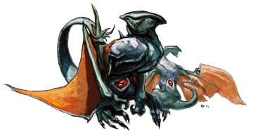

中型植物

| 生命骰： | 15d8+30（97点生命值） |
| 先攻： | +9 |
| 速度： | 5英尺，飞行60英尺（良好） |
| 防御等级： | 15（+5敏捷），接触15，措手不及10 |
| 基本攻击／擒抱： | +11/+13 |
| 攻击： | 爪抓+13近战 |
| 全力攻击： | 2次爪抓+13近战，尾扫+8近战 |
| 伤害： | 爪抓1d4+2，尾扫1d4+1 |
| 面宽／触及： | 5英尺/5英尺 |
| 特殊攻击： | 衰弱射线 |
| 特殊能力： | 伪装，火焰免疫，植物特性，静默 |
| 豁免： | 强韧+11，反射+10，意志+5 |
| 属性： | 力量14，敏捷21，体质15，智力8，感知11，魅力4 |
| 技能： | 聆听+2，侦察+20 |
| 专长： | 警觉，顺势斩，飞越，盘旋，精通先攻，猛力攻击 |
| 地域： | 温带丘陵与平原 |
| 组织： | 集群（3�C18只） |
| 挑战等级： | 10 |
| 宝物： | 无 |
| 阵营： | 永远中立 |
| 进化： | 16�C21HD（中型）；22�C45HD（大型） |
这种被称为孢子蝠的真菌类掠食者会悄无声息地翱翔于夜空，搜寻温血生物作为盛宴。它们是严格的肉食者，尤其偏爱哺乳动物与鸟类。
孢子蝠的外形犹如由海绵状物质构成的深灰色蝙蝠。其躯体中央嵌有一只无睑的橙色巨眼。该生物身高3英尺，翼展近8英尺，双腿与末端生有凶险钩爪的长尾可用于撕裂猎物。
孢子蝠使用其独有的语言，其他生物无法理解。
孢子蝠利用静默与伪装能力悄然飞临猎物上空。这些真菌生物会向毫无戒备的对手倾泻衰弱射线。当猎物明显衰弱后，它们便俯冲而下以爪尾发动攻击。孢子蝠狩猎时协同作战，优先集火明显具有威胁的目标。极度饥饿的孢子蝠会不顾自身安全，在射线攻击间隙扑向敌人。
孢子蝠可通过"召唤自然盟友VIII"法术进行召唤。
弱能射线（Enervation Ray）（Su）：孢子蝠可每隔一轮向150英尺内任意目标发射褐色弱能射线，效果等同于12级术士施放的"弱能术"。
伪装（Camouflage）（Ex）：在非日光照射环境下，孢子蝠可隐入阴影获得九成隐蔽（40%失手率）。人造光源或任何光亮法术会压制此能力。
植物特性（Ex）：孢子蝠免疫毒素、睡眠、麻痹、震慑与变形效果，不承受重击及影响心灵的效果，并具备昏暗视觉。
静默（Silent）（Ex）：孢子蝠以绝对静默方式移动，不发出任何声响。